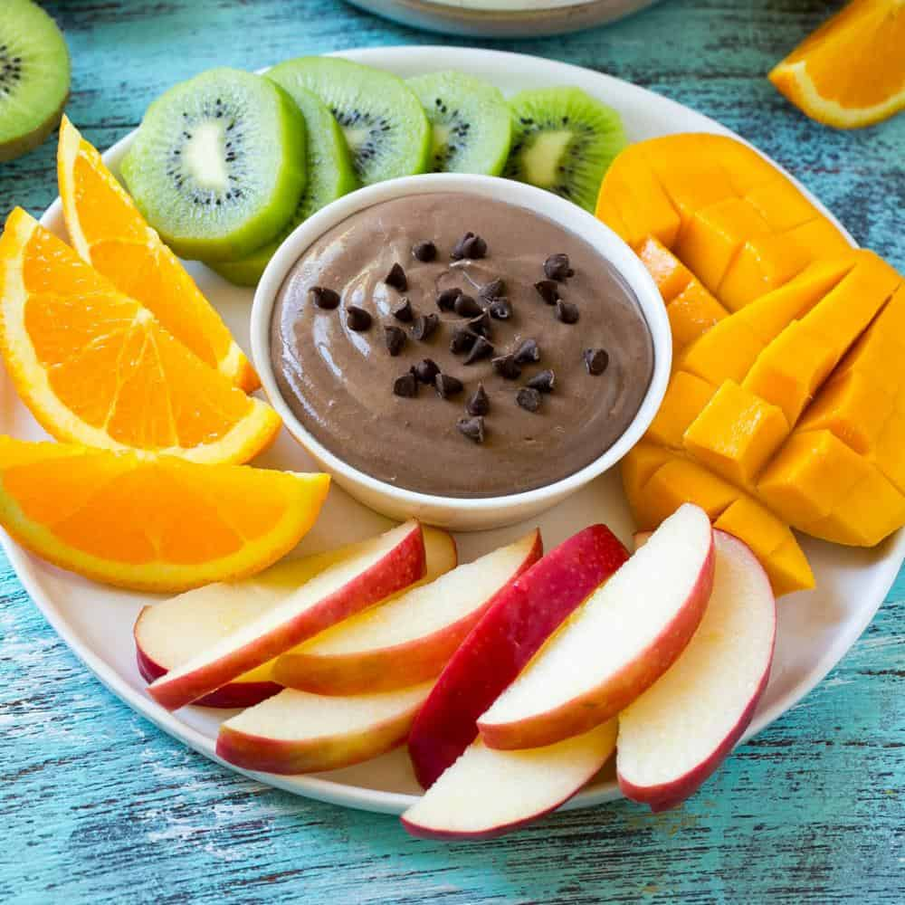

Chocolate Fruit Dip

Description
A delicious and rich
chocolate fruit dip recipe that everyone will love! Perfectly
creamy and smooth fruit dip that has added protein that
can be ready in just about 5 minutes!
Making this chocolate fruit dip recipe is fun,
very easy to make, and ready in just about
5 minutes. Add some protein if you desire a
high protein treat! This fruit dip will come in
handy if you like to snack quite a bit.
Ingredients
- Chocolate chips
- Whey protein
- Nut butter
- Greek yogurt
- Water
Steps
- Place chocolate chips in a medium bowl.
Microwave in 30-sec intervals until chocolate
is melted.
- Stir in nut butter, protein powder, Greek
yogurt, and water until smooth
and creamy.
- Garnish, serve, and enjoy!